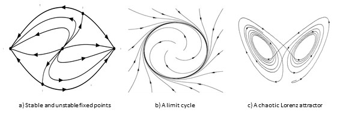

Physics Compiled is a long-term personal project: a structured attempt to understand how mathematical structures emerge from — and constrain — experimental reality.
These notes are neither popular science nor a conventional textbook. They aim to pedagogically present complex physics through equations. The three general rules I follow when writing them down is:
The guiding questions are simple:
The objective is ambitious: to cover most major domains of physics — from classical mechanics to quantum fields — in a unified narrative written in my own words. It comes from my desire of understanding mathematically every phenomenon that I'm looking at. In physics, equations are a language.
This is a living document. Criticism, discussion, and collaboration are warmly welcome. Feel free to create issues or directly contact me at
